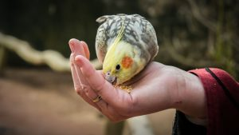
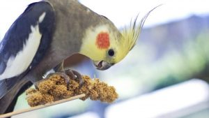
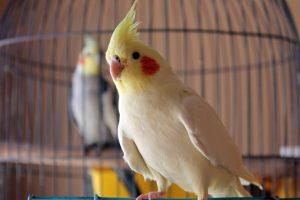
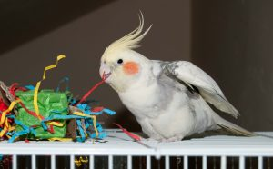
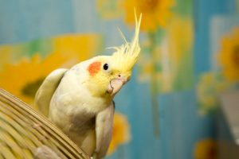
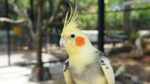

کوکاتیل یا عروس هلندی یکی از کوچکترین انواع طوطی در جهانه و به خاطر ظاهر زیبا، هوش بالا و رفتارهای بامزهای که داره طرفداران زیادی داره وحتی در آمریکا بهش لقبِ «محبوبترین پرنده خانگی» رو دادن! اگه شما هم قصد نگهداری از یه عروس هلندی زیبا رو دارید باید از قبل یه سری لوازم مورد نیاز رو تهیه کنید. اگه در این مورد اطلاعاتی ندارید نگران نباشید! ما در این مطلب در مورد خرید لوازم عروس هلندی صحبت میکنیم و بهتون میگیم برای اینکه از عروس هلندیتون بهتر نگهداری کنید به چه لوازم و وسایلی نیاز خواهید داشت. در ادامه با ما در پت پرس همراه باشید.

آیا عروس هلندی پرندهی مناسبی برای شماست؟
قبل از اینکه عروس هلندی بیارید اول در موردش تحقیق کنید و مطمئن بشید که این پرنده برای سبک زندگی و روحیات شما مناسبه. در این رابطه پیشنهاد میکنیم مقاله جامع نگهداری عروس هلندی رو بخونید تا در مورد شرایط نگهداری و همینطور بیماریهای این پرنده بیشتر بدونید.
قیمت عروس هلندی چندان بالا نیست و نیاز به وسایل خیلی زیادی هم نداره، ولی باز هم باید هزینه ماهانه غذا، نگهداری و ویزیت دامپزشک و … رو در نظر بگیرید.
از طرفی اگه در طول روز بیرون هستید هم نگران نباشید؛ عروس هلندی به خوبی میتونه تنهایی رو تحمل کنه تا شما برگردید. اما توصیه میکنیم برای اینکه پرندهای اجتماعی و خوشرفتار داشته باشید وقتی خونه هستید براش وقت بذارید، بهش محبت کنید و یه سری آموزشهای رفتاری رو بهش یاد بدید.
عروس هلندی یا کوکاتیل یکی از کوچکترین اعضای خانواده طوطیسانانه و مثل خیلی از طوطیها قابلیت حرف زدن و تقلید صدا داره. البته مهارت این پرنده بیشتر در سوت زدنه تا حرف زدن و به روشهای مختلف میتونن سوت بزنن. (مطلب مرتبط: آموزش حرف زدن به عروس هلندی)
در مورد نگهداری و آموزش عروس هلندی چقدر میدونی؟
عروس هلندیها خیلی باهوشن و چیزای مختلفی رو میتونن یاد بگیرن؛ ولی این پرندههای زیبا خیلی هم حساسن و لازمه که از روش درست و اصولی باهاشون رفتار کرد. در غیر این صورت آموزش بهش فایده ای نداره و ممکنه حتی از شما بترسه و نتونه رابطه خوبی باهاتون برقرار کنه.
اگه تازه عروس هلندی آوردی و هیچ اطلاعاتی در مورد نگهداری و تربیت این کوچولوها نداری، نگران نباش! ما این راهو بلدیم و یه کتاب الکترونیکی در مورد نگهداری و تربیت عروس هلندی تهیه کردیم که توش هر اطلاعاتی که راجع به مراقبت و نگهداری از این طوطیهای زیبا نیاز داری رو میتونی پیدا کنی. طرز صحیح نگهداری، شرایط قفس، تغذیه، مشکلات رفتاری و آموزش حرف زدن به عروس هلندی از جمله سرفصلهای این کتاب جامع هست.
یادتون باشه که هرکسی که کوکاتیل داره یا در آینده میخواد از یکی از این پرندههای خوشگل مراقبت کنه به داشتن و مطالعه این کتاب نیاز داره. برای اینکه در مورد این ایبوک بیشتر بدونید روی لینک زیر کلیک کنید.
بهترین رژیم غذایی برای عروس هلندی چیه؟
یکی از مهمترین نکات در نگهداری از عروس هلندی تهیه غذای مناسبه. بعضی افراد فکر میکنن چون عروس هلندی یه پرنده است پس میشه همیشه بهش ارزن و دانههای خوراکی داد و این نوع دانهها براش کافیه. در صورتی که این تصور کاملا اشتباهه و در دراز مدت اثرات بدی روی سلامتی عروس هلندیتون میذاره.
نکته مهم در انتخاب غذای عروس هلندی تنوع غذاییه؛ اینطوری میتونید مطمئن باشید که تمام مواد لازم به بدنش میرسه. این موضوع به خصوص برای کسانی که به کار پرورش عروس هلندی مشغول هستند، خیلی مهم است. استفاده از غذای بد و یا ناکافی برای جوجههای پرورشی ممکنه باعث ضعیف شدن و یا در نهایت مرگ جوجهها بشه.
پیشنهاد ما اینه که از غذاهای تجاری مخصوص عروس هلندی یا پلت استفاده کنید. این غذاها از نظر مواد مغذی بالانس شده هستن و تمامی مواد مورد نیاز بدن عروس هلندی رو تامین میکنن. از طرفی پلتهای تجاری خیلی خوش خوراکن و عروس هلندی شما هرچقدر هم بدغذا باشه اونا رو دوست داره. با کلیک روی لینک زیر میتونید انواع غذای خشک مخصوص عروس هلندی رو مشاهده کنید و به صورت آنلاین خریداری کنید.
قبلا تو مقاله غذای عروس هلندی در مورد تغذیه و رژیم غذایی این پرنده از بدو تولد و جوجگی تا بلوغ و بزرگسالی بیشتر صحبت کردیم و پیشنهاد میکنیم حتما مطالعهش کنید.
البته غذای خشک و تجاری نباید تمام غذای عروس هلندی رو تشکیل بده.
“بهترین رژیم غذایی عروس هلندی حداکثر ۷۰% غذای تجاری و مابقی باید دانههای خوراکی و میوهها و سبزیجات تازه باشه.

غلات، میوهها و سبزیجات مفید برای عروس هلندی
طیف وسیعی ازغلات و میوهها و سبزیجات هستن که برای عروس هلندی ضرری ندارن و اتفاقا خوردن اونا براش خیلی مفید و خوب هم هست. برخی از این میوهها و سبزیجات عبارتند از:
| انواع جوانه | هویج | بروکلی | ذرت | کاهو | اسفناج | کدو سبز | گلابی | ریحان و جعفری | کدو تنبل |
| گیلاس | موز | زردآلو | سیب | کیوی | انبه | پرتقال | شلیل | خیار | هندوانه |
| آویشن | هلو | کرفس | برنج پخته | پاستای پخته | سیب زمینی آبپز | لبو پخته | رزماری | آناناس | نان تست گندم |
غذاهای سمی و خطرناک برای عروس هلندی!
آووکادو، الکل، قهوه، چای، شکلات، غذاهای شیرین، شور و چرب، تنباکو، بادمجان، هسته و دانههای میوه (سیب، گلابی، پرتقال و ..)، سیر و پیاز

اسنک و تشویقی برای عروس هلندی لازمه؟
بله، علاوه بر غذای روزانه پیشنهاد میکنیم در طول آموزش به عروس هلندیتون اسنک و تشویقی هم بدید. تشویقی عروس هلندی به تقویت و بهبود رابطه بین شما و پرندهتون کمک زیادی میکنه؛ از طرفی موقع بازی کردن و آموزش حرف زدن یا یاد دادن شیرین کاری به پرندهتون میتونید با دادن خوراکی تشویقش کنید. (مطلب مرتبط: آموزش عروس هلندی)
عروس هلندی هم مثل بقیه طوطیسانان بسیار باهوشه و عاشق یادگرفتن چیزای جدیده؛ اما مطمئنا دادن یه تشویقی خوشمزه اونو به یادگیری تشویق میکنه و با علاقه به حرفتون گوش میکنه. انواع میوهها و سبزیجات مناسب عروس هلندی رو میتونید در تکههای کوچک و بعنوان جایزه بهش بدید. اما اگه میخواید خیلی حرفهای عروس هلندیتون رو تربیت کنید پیشنهاد میکنیم از خوراکیهای تشویقی تجاری استفاده کنید که هم خیلی خوشمزهان و هم دارای ویتامینها و مواد معدنی مورد نیاز پرندهتون هستن.

قفس عروس هلندی چه ویژگیهایی باید داشته باشه؟
مورد بعدی که لازمه قبل از ورود عروس هلندی حتما براش تهیه کنید یه قفس مناسب و راحته. قفس عروس هلندی باید بزرگ باشه تا پرنده به راحتی بتونه توش حرکت کنه و پرواز کنه؛ بنابراین هرچقدر قفس عروس هلندی بزرگتر باشه براش بهتره.
ابعاد مناسب برای قفس باید حداقل ابعادش ۶۰*۴۰ سانتیمتر باشه و حداقل ۶۰ سانتیمتر هم ارتفاع داشته باشه.
چنین قفسی میتونه به عنوان خونه پرنده در نظر گرفته بشه؛ اما حواستون باشه که عروس هلندی نیاز داره هرازگاهی بیرون از قفس هم باشه. البته عروس هلندیای که هنوز دستی نشده و از آدمها میترسه دوست داره بیشتر تو قفسش بمونه؛ اما وقتی اونو اهلی کردید و دستآموز شد لازمه در طول روز بیرون بیاریدش.
اگه هنوز عروس هلندیتون دستی نکردین حتما مقاله رام کردن عروس هلندی رو بخونین. ما توی اون مقاله در مورد روشهای جلب اعتماد، دستی کردن عروس هلندی صحبت کردیم.
از طرفی عروس هلندیها در طبیعت دوست دارن از شاخههای درخت بالا بپرن و خودشون رو سرگرم کنن؛ بنابراین قفس عروس هلندی باید حداقل چند تا میله افقی هم داشته باشه تا بتونه ازشون بالا بره. در لینک زیر میتونید انواع قفس برای پرنده رو ببینید و هرکدوم رو دوست داشتید انتخاب کنید.
نکاتی مهم در مورد قفس عروس هلندی
- بهتره قفس رو در جایی از خونه قرار بدید تا بتونه شما و کل خونه رو ببینه و اجتماعی بشه.
- در طول شب توصیه میشه روی قفس رو بپوشونید تا عروس هلندی دچار «وحشت شبانه» نشه! عروس هلندیها در طول شب به ۱۲ ساعت خواب نیاز دارن و پوشوندن قفس بهش کمک میکنه با خیال راحت و مطمئن بخوابه و استراحت کنه.
- قفس پرنده رو در نزدیکی وسایل پخت و پز قرار ندید، چون حرارت و همینطور دود میتونه صدمات زیادی به پرنده بزنه.
- قفس پرنده نباید در معرض دود سیگار و قلیون و … باشه؛ چون نیکوتین برای طوطیسانان سمی هست.
- ظرف آب و غذای عروس هلندی رو هرروز عوض کنید.
- میوهها و سبزیجات خورده نشده رو بعد از ۲۴ ساعت از قفس خارج کنید.

وسیلههای سرگرم کننده باعث میشه پرندهای شاد و سرحال داشته باشید!
عروس هلندیها بسیار باهوشن و اگه اسباب بازی مناسب دور و برشون نباشه بیحوصله و افسرده میشن. بنابراین توصیه میکنیم اولا خودتون حتما در طول روز براش وقت بذارید و حداقل یک ساعت باهاش بازی کنید. (مطلب مرتبط: اسباب بازی عروس هلندی)
علاوه بر این، خوبه که انواع لوازم سرگرمکننده براش تهیه کنید تا باهاشون بازی کنه و حوصلهش سر نره. تاب و حلقه در سایزهای مختلف وسایل بازیهای نردبونی بازیهای جذابی برای عروس هلندی هستن. همچنین بازیهای فکری هم گزینه خوبی برای عروس هلندیه؛ چون ذهنشون رو درگیر میکنه و ساعتها میتونن باهاش مشغول باشن.
خرید وسایل بازی مخصوص عروس هلندی

جلیقه پرواز و کاربردهای آن
درسته که عروس هلندی مدتهای زیادیه که اهلی شده و به همنشینی با ما آدما عادت کرده؛ اما هرچی باشه یه پرنده است و پرندهها هم عاشق پرواز کردن هستن. ازونجایی که اجازه پرواز آزادانه به عروس هلندی خطرات زیادی به همراه داره (گم شدن پرنده)؛ بهترین راه حل استفاده از جلیقه پروازه!
البته خیلی از صاحبان عروس هلندی بر این باورند که پرواز کردن عروس هلندی تو خونه کافیه و خب از جهاتی حق هم دارن. اما اگه شما از اون دسته هستید که دوست دارید عروس هلندیتون تجربه پرواز در فضای بیرون رو هم داشته باشه پس باید براش جلیقه پرواز بخرید.
این جلیقه مثل یه لباس تن پرنده پوشیده میشه و بند جلیقه به شما کمک میکنه کاملا رو پرنده کنترل داشته باشید.
خرید جلیقه پرواز مخصوص عروس هلندی
برای استفاده از جلیقه پرواز لازمه به نکات زیر توجه کنید:
- جلیقهای بخرید که جنس خوب و باکیفیتی داشته باشه تا یه موقع پاره نشه.
- مطمون بشید که اندازه جلیقه مناسب پرندهتون هست؛ اگه جلیقه بزرگ باشه عروس هلندی از جلیقه بیرون میاد و فرار میکنه!
- از بچگی باید عروس هلندی رو به پوشیدن جلیقه پرواز عادت بدید.
- اما اگه تازه عروس هلندی آوردید اول باید دستی و اهلیش کنید و بعد از تمرین پرواز رو شروع کنید.
- قبل از اینکه در بیرون از منزل تمرین پرواز کنید حتما در خونه بارها این کار رو انجام بدید تا هم شما و هم پرنده به این کار عادت کرده باشین.
- بعد از مدتی که تو خونه تمرین کردید میتونید تو بالکن تمرین کنید و بعد کم کم در فضای بیرون هم امتحانش کنید.
- در جایی این کار رو انجام بدید که هیچ خطری برای عروس هلندی وجود نداشته باشه (پرندههای شکاری، گربه و …)
- البته بعضی از عروس هلندیها علاقهای به پوشیدن جلیقه پرواز ندارن!

سخن آخر
در این مطلب سعی کردیم تمامی لوازم مورد نیاز برای نگهداری از عروس هلندی رو به شما معرفی کنیم. عروس هلندی پرنده خیلی محبوبی در دنیاست و حتی موسسهها و وبسایت های مخصوص عروس هلندی وجود دارن که اختصاصا در مورد این پرنده اطلاعرسانی میکنن.
امیدواریم این مقاله بهتون کمک کنه لذت بیشتری از نگهداری از عروس هلندی ببرید و رابطهای خوب و شاد با هم داشته باشید. اگه هرگونه نظر یا تجربهای در مورد نگهداری از عروس هلندی دارید خوشحال میشیم با ما و سایر خوانندگان به اشتراک بگذارید.
سوالات متداول…
احتمال داره این سوالات براتون پیش اومده باشه!
بی حالی و خوابیدن زیاد پرنده میتونه نشونه ی بیماری عروس هلندی باشه.
پیشنهاد میکنم حضوری به متخصص پرندگان مراجعه کنین و اگر امکانش رو ندارین مراحل ثبت مشاوره ی آنلاینو انجام بدین تا مشکل پرندتون سریعتر بررسی بشه.
دامپزشک آنلاین
عروس هلندی تمایل بیشتری به دانه داره و برای اینکه اقلام دیگه ی غذاش خورده بشه بهتره مصرف سایر اقلام رو بیشتر کنین. درواقع باید با صبوری عادتش بدین به خوردن مواد دیگه که همه مواد موردنیازش تامین بشه. میتونین تعداد وعده هاییکه دانه میدینو کمتر کنین که وقتی گشنه میشه مجبور باشه همون سبزیجات،میوه یا تخم مرغ پخته شده رو بخوره. اگر خودتونم جلوش میوه و غذاهارو بخورین میتونه ترغیبش کنه که امتحانشون کنه.
پرنده ی مینا معمولا با بقیه کنار نمیاد مگه اینکه هردو از وقتی جوجه بودن باهم بزرگ شدن و بهم عادت کرده باشن.
کاملا بستگی داره به شخصیت پرندتون که اجتماعی هست یا نه و مهمتر از اون نژاد سگی که میخواین نگهداری کنین و اینکه تربیت شده برای هم خونه بودن با حیوونای دیگه یا نه.
پیشنهاد میکنم نگاهی به نژادهای این دومقاله بندازین، تمامی سگ های پاکوتاه مقاله ی اول با پت های دیگه کنار میان. توی مقاله دوم هفت تا نژاد هاسکی،سامویید،تریر،شیتزو،پاگ،بولداگ و گلدن رتریور بیشتر به اجتماعی بودن با حیوونای دیگه شناخته شدن.
۵ نژاد سگ پاکوتاه خانگی در ایران و ویژگی های اون ها
۲۰ نژاد سگ بسیار محبوب ایران در سال ۱۳۹۸ و ویژگی های آن ها
عوامل مختلفی ممکنه باعث شده باشه که چینه دان حرکت طبیعیش متوقف بشه و غذا توش انباشته شه:
بدنش یا غذاش کم آب بوده، موادیکه توی غذاش بوده جوری بوده که توی چینه دان ازهم باز میشدن و حجمشون بیشتر میشد یا اینکه تکه های بزرگی بهش داده شده، دمای محیط اطراف و غذای جوجه تنظیم نبوده (دمای محیط حدود ۳۰ درجه سانتیگراد باشه و دمای غذا نباید بیشتر از ۴۰ درجه باشه و توی ماکروویو هم گرم نشه یا زیادی هم سرد نباشه چون اولی باعث سوختن چینه دان میشه که اونم عاملیه واسه توقف حرکات چینه دان، دومی هم باعث کمک به رشد باکتری و مخمر و عوامل عفونی میشه) دمای بدن خود جوجه پایین بوده (که این رو همه ی سیستمای بدنش تاثیر میذاره. دمای بدن پرنده ها از انسان بالاتره و این گرمای بدنشون رو وقتی لمسشون میکنین متوجه میشین)، جوجه قبل اون به بیماریای عفونی مبتلا بوده (خصوصا ویروس)، دچار مسمومیت با سرب شده بود، زیادی چینه دان کشیده شده بود و
درنهایت مهمتر از همه اینه که زیاد از حد بهش غذا داده شده. وقتی یه غذای قدیمی هنوز توی چینه دان وجود داره و دوباره غذای جدید بهش اضافه بشه احتمال انباشتگی چینه دان زیاد میشه که احتمال تخمیر اون مواد رو هم بالا میبره که شما بوی ترشیدگی رو احساس میکنین. پس مهمه که یادتون باشه که زیاد غذا ندین (نباید بیشتر از ۵% وزن بدنش غذا بدین)، غذاشون آب کافی داشته باشه و تا موقعیکه چینه دان کامل خالی نشده مجدد بهش غذا ندین. (معمولا بین ۴-۲ ساعت طول میکشه که چینه دان خالی بشه)
برای دفعات بعدیتون یادتون بمونه که اگه دیدین و لمس کردین که غذا تو چینه دان مونده بهش کمی مایعات گرم بدین تا چینه دان دوباره بتونه حرکت کنه و اگه نشد به متخصص پرندگان مراجعه کنین که اقدام به تخلیه ی مواد از چینه دان کنه.
برای اطلاعات بیشتر حتما مطلب غذای جوجه عروس هلندی رو هم بخونین.
جیغ زدنش میتونه ناشی از ترس باشه چون به محیط جدید عادت نکرده و با افراد و محیط آشنا نیست که به مرور باید بهش نشون داده باشه که خونه واسش خطری نداره. تا چندروز فقط کارای معمولیتون رو کنارش انجام بدین مثل غذا گذاشتن و غیره و آروم باهاش صحبت کنین. اگه همچنان آروم بود میتونین تشویقی هم بدین بهش که بفهمه لزومی نداره بترسه و لوازم بازی هم براش بذارین. بعد کم کم میتونین دستتونو طرفش ببرین ولی اگه طرفتون نیومد اصرار نکنین بذارین خودش بیاد سمتتون. (مطلب مرتبط: علت جیغ زدن عروس هلندی)
اگه مرغ عشقتون بالغ باشه و سروصدای زیاد و حرکات خاص از خودش نشون میده احتمال داره جفت بخواد.
اگر علائم غیرعادی دیگه غیر از تکون دادن سرش مثل تعادل نداشتن، گیج بودن، بیحالی و تغییر در مصرف غذا و … دیدین میتونین بعد از انجام مراحل ثبت مشاوره آنلاین علائم رو مطرح کنین تا بیشتر بشه راهنماییتون کرد:
دامپزشک آنلاین
اگه درکنار ساکت بودنش علائمی مثل بیحالی، بی اشتهایی، پف دادن پر یا هرتغییر غیرعادی دیگه دیدین نیازه که بیشتر بررسی بشه. ولی معمولا ماده ها پرخاشگر تر از نرها هستن. میتونین ظرف غذا و آبشونو جدا و با فاصله بذارین که نر هم بتونه به اندازه کافی غذا و آب بخوره. اگه جنس وسیلههای سرگرم کننده عروس هلندی فقط چوبه و رنگ هم نداره مشکلی نیستش. میتونین انواع دیگه ی لوازم بازیارو هم در اختیارشون بذارین. پیشنهاد میکنم این کتاب هم مطالعه کنین:
راهنمای جامع نگهداری و آموزش عروس هلندی
برای تشخیص جنسیت عروس هلندی از روی ظاهر لازمه که اون پرنده حدودا ۶ ماهه باشه و رنگ طبیعی عروس هلندی باشه(مثلا درباره ی لوتینو صدق نمیکنه). نرها سرشون زرد کمرنگه و گونه هاشون نارنجی کمرنگ ولی برای ماده سرشون خاکستریه و گونه هاشون پررنگ تره. ممکنه زیر یا حتی روی دم یا بال ماده یسری خط و خطوط دیده بشه.
از لحاظ رفتاری نرها معمولا پرجنبو جوش تر از ماده هستنو آوازخونی و حرف زدنشون هم بیشتره.
عروس هلندیا جزو اون دسته پرنده هایی هستن که یه مقدار ریزش پرز موقع تمیز کردنشون هست و میشه با روشایی جلوشو گرفت: هرچه پوستشون بیشتر مرطوب باشه مثلا اگه حمام بتونن بکنن یا شما اسپری آب بزنین روشون میزان این پرزا کمتر میشه. درکنارش میتونین تصفیه کننده هوا و فیلتر هپا تهیه کنین که ذرات ریزو به دام میندازن. اگه دیدین بیش از حد به نظافت مشغوله، پوستش ملتهب شده یا پرهای ناحیه ریخته لازمه که علائم و اطلاعات بیشتر رو باهامون از طریق ثبت مشاوره آنلاین درمیون بذارین تا بتونیم راهنماییتون کنیم:
دامپزشک آنلاین
درکل عروس هلندی ها هم جزو اون دسته پرنده هایی هستن که از پرخاشگری بیشتر نر به ماده گزارش شده. اگه دعواهاشون شدید شده لازمه که نر رو از ماده یا موقتی یا دائم جدا کنین،ظرف غذا و آبشون جدا باشه و قفس به اندازه کافی برای فرار کوکاتیل ماده بزرگ باشه.
معمولا از دوحالت خارج نیست: یا از جانب شما توجه کافی ندیده و سر ماده خالی کرده یا اینکه ماده اندازه اون بهش توجه نشون نمیده.
بله ولی احتمال داشتنش نسبتا کمه.
هرچی سن پایینتر باشه آموزشش به نسبت راحتتره. میتونین موقعیکه از لحاظ غذا و نظافت مستقل میشه (حدود ۵۰-۴۰ روزگی) آموزششو شروع کنین. اگه سن عروس هلندیتونو هم نمیدونین بهتره مطلب تشخیص سن عروس هلندی رو بخونین و به راحتی از روی علائمی که داره سنشو بفهمین.
خیر فقط به مرور که به رژیم غذایی جدید عادتش میدین سعی کنین رژیم غذایی کاملی داشته باشه و از همون اول عادت کنه که بعدا سختتون نشه.
عروس هلندیا جزو پرنده های اجتماعی هستن و اگه میخواین تنها نگهداری کنین لازمه وقت و توجه زیادیو بهش اختصاص بدین که به مشکل برنخوره. ترجیحا جفت داشته باشه بهتره.
اولین مرحله ی اهلی کردنش اینه که به مرور بهش نزدیک بشین جوری که به حضور شما ترس نداشته باشه و بتونین با دستتون بهش غذا بدین، روی دستتون بمونه و… این کتاب کامل میتونه راهنماییتون کنه:
راهنمای جامع نگهداری و آموزش عروس هلندی
جلیقه هم مزایا داره هم معایب، به شما امکان کنترل کردنشو میده ولی از طرفی عادت دادن پرنده به پوشیدن جلیقه و استرس نگرفتن خودش پروسه ی طولانی ای هست. اگه مدام از این جلیقه استفاده بشه میتونه به بال و پرها آسیب بزنه خصوصا اگه شما حرکت ناگهانی کنین یا از دستتون در بره یا بتونه خودشو آزاد کنه.

ممنون از مطلب خوب و جامعتون
سلام من یک عروس هلندی دارم که بی نهایت رام و دستی 🦜و بی نهایت ترسو هست حتی با جایزه هم به اسباب بازی ها نزدیک هم نمی شود فرمان ها رو به درستی انجام میده و صحبت هم میکنه از شما کمک می خواستم!
ممنون از گروه خوب پت پرس 🐕🐈🐇🦎🐢🐠🦜
شما رو ارجاع میدم به کانال یوتیوب پت پرس
اونجا در مورد همه این موارد ویدیو ساختیم و مفصل توضیح دادیم 🙂
سلام ببخشید چگونه محل دستشویی عروس هلندی رو بهش یاد بدم
سلام امیرحسین عزیز
برای اینکار اولین اقدام اینه که بدونی عروس هلندی کی میخواد فضله کنه؟ بعضی از عروسا توی قفس به بالاترین نقطه میرن یا حالت خاصی به خودشون میگیرن. به محض دیدن این علامت باید اونو به محل مورد نظر ببری یا پد مخصوص رو زیرش قرار بدی و یک کلمه کوتاه و ساده رو بگی مثلا PP بعد از اینکه توی اون محل دستشویی کرد بهش تشویقی بده و چندبار تکرار این عمل میتونه عروس رو شرطی کنه
سلام ببخشید من الان میخوام عروس هلندی به سرپرستی بگیرم اگه از دیوار به سرپرستی بگیرم خوبه یا حتما باید از فروشگاه های معتبر پرنده عروس هلندی یا پرنده ی دیگه بیارم
سلام عرشیا جان
هرجایی میتونه خوب باشه اما به شرطی که با دقت کنترل کنی و بازدید داشته باشه که بدونی بیماری دارن یا نه
سلام میشه لطفاً چندتا پرنده فروشی معتبر در اصفهان رو نام ببرین
سلام علی عزیز
ما فروشنده نیستیم و متاسفانه اطلاعی از فروشنده ها نداریم.